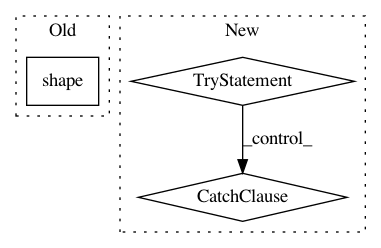

74c062162194fa2d89e85f2a99bf4c71e66d5654,examples/tsf/tsf_trainer.py,TSFTrainer,eval_model,#TSFTrainer#Any#Any#Any#Any#Any#Any#,93
Before Change
logits_ori, logits_tsf = model.decode_step(sess, batch)
loss, loss_g, ppl_g, loss_d, loss_d0, loss_d1 = model.eval_step(
sess, batch, self._hparams.rho, self._hparams.gamma_min)
batch_size = batch["enc_inputs"].shape()[0]
word_size = np.sum(batch["weights"])
losses.append(loss, loss_g, ppl_g, loss_d, loss_d0, loss_d1,
w_loss=batch_size, w_g=batch_size,
After Change
data0_ori, data1_ori, data0_tsf, data1_tsf = [], [], [], []
while True:
try:
batch = sess.run(input_tensors,
{tx.global_mode(): tf.estimator.ModeKeys.EVAL})
logits_ori, logits_tsf = model.decode_step(sess, batch)
loss, loss_g, ppl_g, loss_d, loss_d0, loss_d1 = model.eval_step(
sess, batch, self._hparams.rho, self._hparams.gamma_min)
batch_size = batch["enc_inputs"].shape[0]
word_size = np.sum(batch["weights"])
losses.append(loss, loss_g, ppl_g, loss_d, loss_d0, loss_d1,
w_loss=batch_size, w_g=batch_size,
w_ppl=word_size, w_d=batch_size,
w_d0=batch_size, w_d1=batch_size)
ori = logits2word(logits_ori, id2word)
tsf = logits2word(logits_tsf, id2word)
half = self._hparams.batch_size // 2
data0_ori += ori[:half]
data1_ori += ori[half:]
data0_tsf += tsf[:half]
data1_tsf += tsf[half:]
except tf.errors.OutOfRangeError:
break
n = dataset._dataset_size
data0_ori = data0_ori[:n]
data1_ori = data1_ori[:n]
data0_tsf = data0_tsf[:n]
In pattern: SUPERPATTERN
Frequency: 3
Non-data size: 3
Instances
Project Name: asyml/texar
Commit Name: 74c062162194fa2d89e85f2a99bf4c71e66d5654
Time: 2018-04-02
Author: zichaoy@cs.cmu.edu
File Name: examples/tsf/tsf_trainer.py
Class Name: TSFTrainer
Method Name: eval_model
Project Name: pymc-devs/pymc3
Commit Name: 5b2766aae94c0615aef2c8d6ac178428e6d28745
Time: 2008-07-20
Author: fonnesbeck@15d7aa0b-6f1a-0410-991a-d59f85d14984
File Name: pymc/database/mysql.py
Class Name: Trace
Method Name: tally
Project Name: scipy/scipy
Commit Name: dd2c0904a4ba0bf58b0f067a1bbbb7ddb49ba1b8
Time: 2020-02-29
Author: j.m.vleeshouwers@tue.nl
File Name: scipy/optimize/_linprog_util.py
Class Name:
Method Name: _clean_inputs